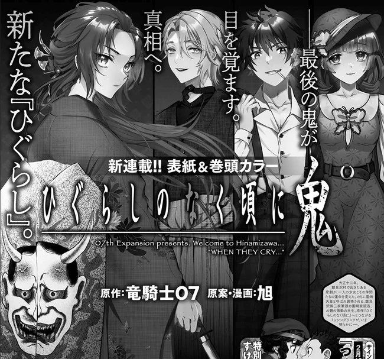
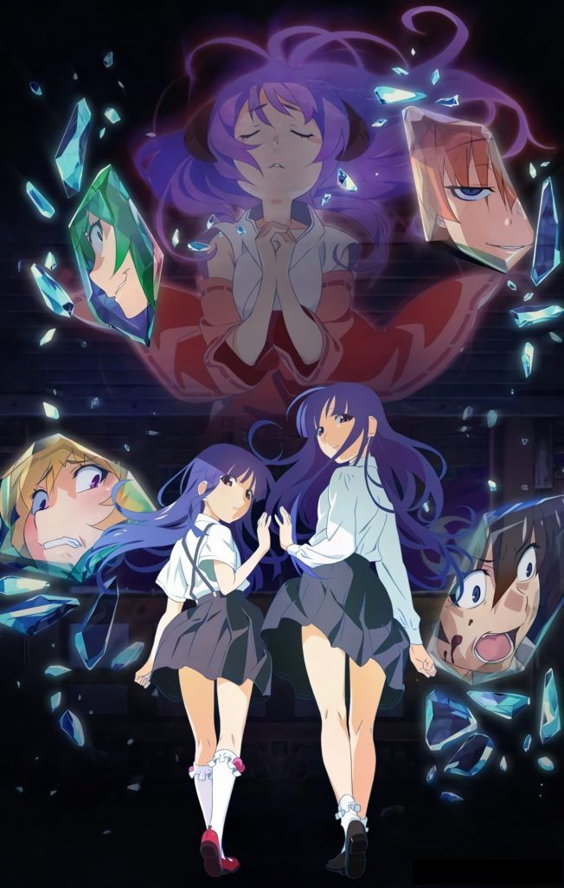
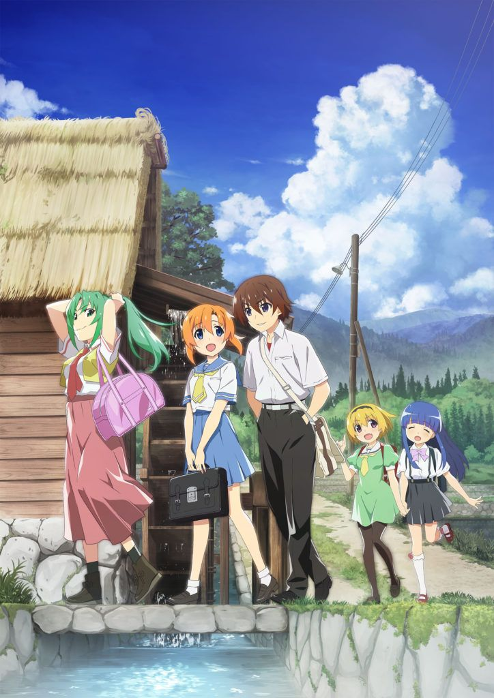

La revista Monthly Action, de la editorial Futabasha, ha anunciado que la franquicia Higurashi: When The Cry contará con un nuevo manga. Esta serie, dibujada por Asahi, llevará por título Higurashi no Naku Koro ni Oni e iniciará su publicación en el número de febrero del magacín.
La revista acompaña el anuncio con un breve adelanto de lo que podremos encontrar en este manga, que define como la pista que falta dentro de la historia, acompañado de la frase «El último demonio ha despertado. Un nuevo Higurashi hacia la verdad«. La trama se situará en la era Taisho, en 1923, donde una tragedia asolará en Hinamizawa y seguirá los pasos de Oryô, la cabeza de familia de los Sonozaki.
La franquicia de Higurashi no Naku Koro ni, en su título japonés, nació originalmente como una novela visual creada por Ryukishi07 y producida por 7th Expansion. El primer videojuego se lanzó en 2002 y contó con otras siete entregas, la última presentada en 2006. Desde entonces, la historia se ha expandido en formato manga, anime y novela.
Si ir más lejos, en 2021 se lanzaron tres nuevos mangas basados en este universo, como son Oni Okoshi-ken, dibujado por Kei Natsumi y publicado en la revista Gangan Online, de Square Enix; Hoshi Watashi-hen, que cuenta con el arte de Seigo Tokiya y se serializa en la Monthly Big Gangan, también de Square Enix, y Higurashi no Naku Koro ni Meguri, creada por Tomoko Akase para la Young Ace Up, de Kadokawa. Este último manga sirve de apoyo para una de las últimas adaptaciones animadas, Higurashi: When They Cry - GOU. Actualmente, la franquicia cuenta con seis adaptaciones al manga.
En cuanto a las adaptaciones televisivas, la primera vez que se llevó a la animación fue en 2006, a través de una adaptación homónima de 26 capítulos producida por Studio DEEN. Al año siguiente se estrenó una segunda temporada bajo el título de Higurashi no naku koro ni kai que actuaba como secuela directa de la primera. Cuenta con un total de 24 episodios animados y están producidos bajo el mismo estudio. Estas adaptaciones se completaron con tres OVAS llamados Higurashi no Naku Koro ni Rei, Higurashi no Naku Koro ni Kira y Higurashi no Naku Koro ni Kaku: Outbreak, lanzados en 2009, 2010 y 2013 respectivamente. Recientemente, se estrenaron Higurashi: When They Cry - GOU, que actúa a modo de remake de la emblemática serie de 2006, y Higurashi: When They Cry - SOTSU, la secuela de ésta.
En cuanto a la accesibilidad de esta obra en España, la primera serie anime Higurashi no Naku Koro ni (o Cuando las cigarras lloran) se encuentra disponible en la plataforma de Netflix para su visionado en versión original subtitulada. Respecto a las novelas, no se encuentran editadas en el territorio. Sin embargo, Planeta Comic editó para su catálogo La parada de Hinamizawa, un manga de tomo único basado en el guion original.
Fuente: ANN